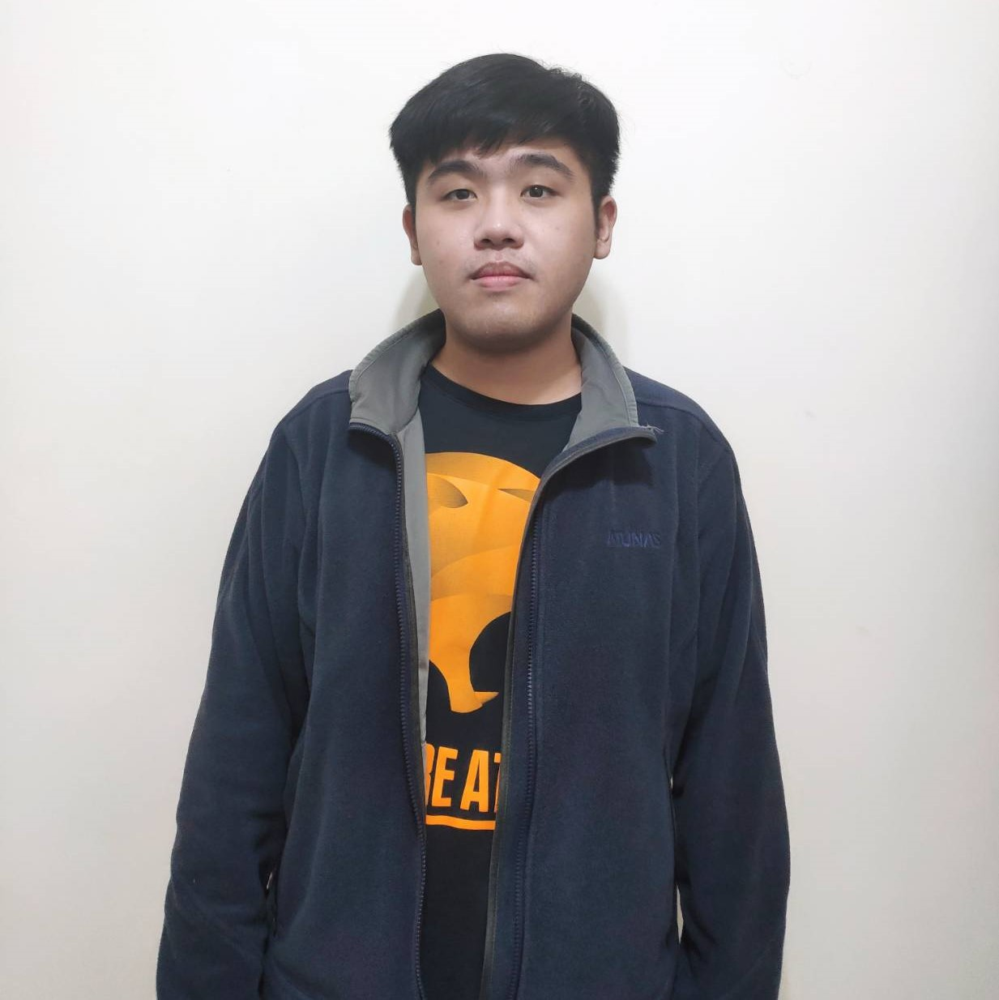
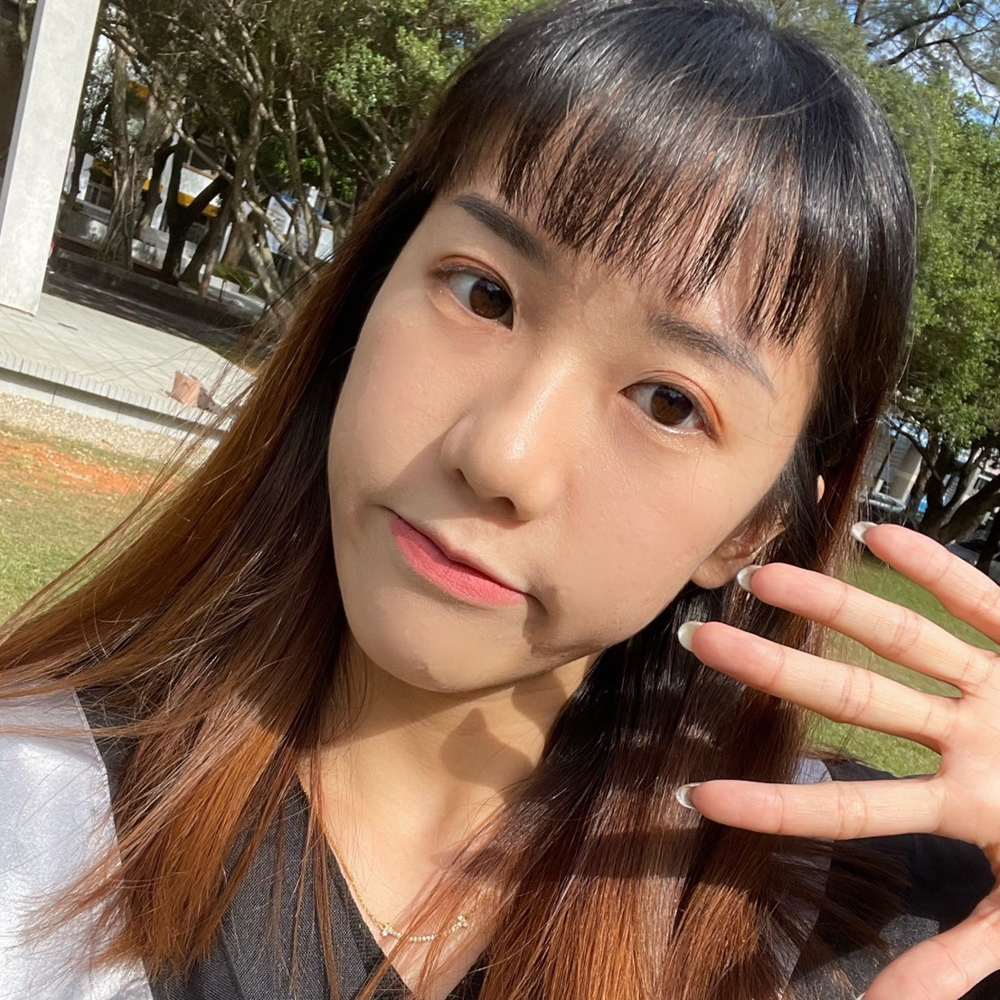
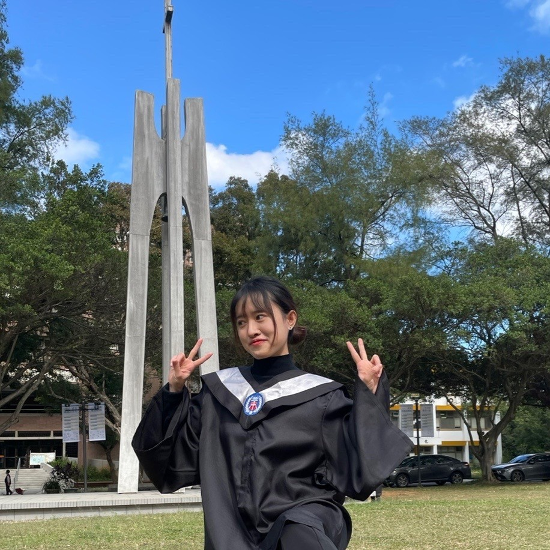
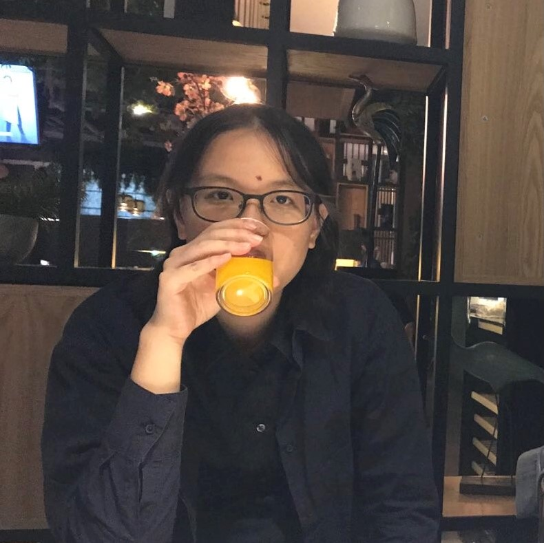

|

第一次做這種長時間開發、完整的專案，花了很多時間開會、溝通，也深刻了解到了那種「因技術問題而無法實現的東西」，看市面上的公司發表這種聲明時也能算有點感觸了。悶著打程式、做著分工的事項、開組員間例行會議、找老師確認等，反覆著進行，而時間過著過著也熬到要結束了，謝謝組員們給的幫助跟體諒，也謝謝老師給的資源與建議，讓我學到很多寶貴的經驗。 |

專題持續了兩個學期，跟之前的課程有很大的差別，專題不僅要自己安排時間還要跟老師約時間討論，需要更多自己的想法與全組的討論，在討論中不斷激盪出火花，珍惜每個人的想法讓我們的專題更好，很謝謝組員們的支持與鼓勵，大家都說專題會吵架，但我們都沒有。一起努力的完成了這個艱難的任務，讓我很有成就感，也很謝謝指導老師給予很多的建議。 |

這次專題我們組所訂的主題是心情紀錄的APP，希望能幫助到更多的人，而看到成品製作出來後，很開心呀，感謝組員的相互合作，即使在製作中會遇到一些瓶頸，但也都順利的解決了。這兩學期的團隊合作以及老師的指導讓我成長許多，期許未來當使用者真正使用到我們的APP時能夠改善他們的生活品質，達成我們起初的初衷，能夠成功幫助到他們。 |

此次專題最為困難的應該是溝通部分，不過當參與者大於一人這是可以預見的情況，尤其當參與者的想法與觀念不統一時，產生變數會特別的多。
|